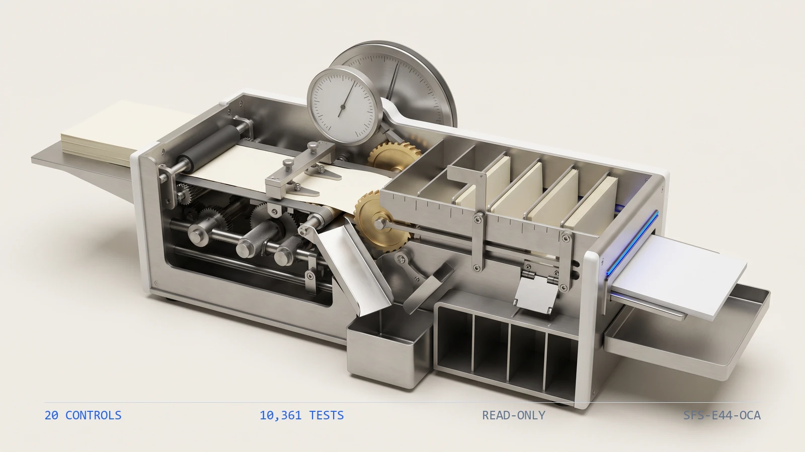

10,3611
Tests
the collected checks that pin this engine's behavior
ENGINE 44
SFS-E44-OCA · DISBURSEMENT CONTROLS · REV 2026-07-24 · PRODUCTION
PRODUCTION = runnable end-to-end, CI-backed, full test suite passing. All data fictional and seeded.
Of everything issued, what has never cleared, and how old is it now?
A check register is a list of promises the bank has not yet been asked to keep. This engine starts after the check has left the building -- whether the payment was approved, coded and released is somebody else's control -- and asks the narrower question: of everything issued, what has never cleared, how old is it against the file's own as-of date, and what has to happen to it now. It reads the six artifacts an outstanding-check process emits -- the bank account register, the check register, the void register, the stated outstanding schedule, the stated escheatment schedule and the bank reconciliation -- and runs twenty deterministic controls over them in registry order. Is the aging file complete and the as-of date readable, are the bank account ids unique and does each declare the escheat jurisdiction it reports to, is every check row complete, uniquely numbered within its own account, drawn on a real account, typed, dated on or before the as-of date, paired on its clearing and cleared for exactly the amount it was issued for, are the withdrawn checks classified, off the outstanding schedule and netted to zero, does the outstanding set re-derive from the register key by key and amount by amount, do each item's age and aging band re-derive from its check date, is every stale-dated item marked for follow-up, is the escheatment schedule exactly the items past the dormancy period and each addressed to its own account's jurisdiction, and does the bank reconciliation's outstanding-checks line tie the re-derived evidence rather than the stated schedule. Every amount is integer cents compared with exact ==, every age is measured to the as_of date the file carries rather than the system clock, and no source artifact is ever written back.
Nothing in an outstanding-check register looks wrong, and three things go wrong in it anyway. The outstanding schedule is a filtered view of the register -- nothing cleared, no cleared date, not withdrawn -- and the moment somebody maintains it beside the register instead of deriving it from the register, it drifts: a check that cleared last month stays on it, a check issued this month never reaches it, and the bank reconciliation ties to the drift rather than to the evidence. A withdrawn check keeps living: a voided, zero-dollar or stop-payment item still occupies a row, and if the void never nets the amount to zero, or the item is still counted as outstanding, a cancelled promise sits on the reconciliation and ages -- far enough, eventually, to be handed to a state that was never owed it. And the clock runs where nobody hears it: past the stale-dating threshold the bank may refuse the item and a human has to chase, re-issue or re-void it; past the dormancy period it stops being the entity's money at all and becomes unclaimed property owed to the escheat jurisdiction of the account it was drawn on. The register looks identical the day before and the day after. This engine rebuilds the outstanding set, its ages, its bands, its follow-up markers and the escheatment schedule from the register through one shared aging kernel, ties the reconciliation to that re-derivation rather than to the stated schedule, ships a planted-defect file for every registered control, and states its benchmark as a command rather than a claim.
Seven control families run in registry order over each aging file. The first proves the others had something to read and that the as-of date is legible, because every age, stale-dating and dormancy test is measured to it and a control that passes on absent evidence reports assurance it never performed.
A check register is a list of promises the bank has not yet been asked to keep. Each row carries a check number, a check date, a check type, a payee, the amount issued, the amount cleared and the date it cleared; beside it sit the withdrawn promises -- voided, zero-dollar and stop-payment checks. Whether the payment should have been made at all is somebody else's control. This one starts once the check has left the building. Three failures hide in that register and none of them look wrong in it. The outstanding schedule is a filtered view -- nothing cleared, no cleared date, not withdrawn -- and the moment it is maintained beside the register rather than derived from it, it drifts, and the bank reconciliation's outstanding-checks line ties to the drift instead of to the evidence. A withdrawn check keeps living: still counted as outstanding, or with a void that never nets the amount to zero, so a cancelled obligation sits on the reconciliation and ages. And the clock runs. Past the stale-dating threshold the bank may refuse the item and a person has to chase the payee, re-issue or re-void it; past the dormancy period it is no longer the entity's money at all but unclaimed property owed to the escheat jurisdiction of the account it was drawn on -- and the register looks exactly the same the day before and the day after. None of these are judgment calls. They are set comparisons and date arithmetic -- an outstanding set rebuilt from the register and compared key by key, a void reversal that must net to zero with exact ==, an age that is whole days from the check date to the file's own as-of date, and two thresholds crossed strictly -- which a deterministic control settles better than a schedule inherited by whoever maintains it this quarter.
The seeded demo runs every control over every aging file7. The CLI generates twenty-two fictional aging files -- one clean baseline and one carrying each of the twenty-one planted defects -- then runs all twenty controls over each. The clean file returns PASS with no flags; every defect file returns REVIEW or FAIL and names the control it tripped along with the reason that control exists.
The outstanding set is re-derived, not read back8. One defect file simply deletes a row from the stated outstanding schedule -- a check that has not cleared and was never withdrawn. Nothing in the schedule itself is inconsistent. age_outstanding_set_recomputes rebuilds the set from the check register through the shared aging kernel, finds the item missing, and fails; rpt_outstanding_total_ties independently reports the reconciliation against the same re-derivation rather than against the schedule that lost the row.
A withdrawn check put back on the schedule would have aged into an escheatment9. Another defect file returns a stop-payment check to the outstanding schedule with an otherwise correct age and aging band, so every arithmetic control still holds. void_not_outstanding is the only rule that sees it, and it is the rule that matters: a cancelled promise left on the schedule keeps aging, and far enough out it would be remitted to a jurisdiction as unclaimed property that was never owed.
| Command | Operation | Output | Exit | Artifacts |
|---|---|---|---|---|
python run.py | regenerate the seeded fictional corpus, run all twenty controls, write both reports | per-file verdicts and every actionable finding, then the overall verdict | 2 for the bundled corpus, which carries a planted defect for every control by design | checkage_report.json, checkage_report.md, samples/ |
python -m checkage_engine samples | analyze an existing folder of aging files without regenerating it | per-file verdicts and findings | 0 PASS / 1 REVIEW / 2 FAIL / 3 usage | none unless --json or --md is passed |
python -m checkage_engine samples --generate --quiet | regenerate the corpus and print only the overall verdict | a single verdict line | 0 PASS / 1 REVIEW / 2 FAIL / 3 usage | samples/ |
python -m pytest checkage_engine/tests -q | run the full test suite for this engine | 10361 passed | 0 when every test passes | none |
| Measure | Result |
|---|---|
| Engine tests10 | 10,361 tests collected live collection from the engine directory |
| Registered controls11 | 20 controls counted from the registry, not from documentation |
| Planted defects12 | 21 defect files every registered control has at least one file that trips it |
| Control coverage13 | 100 percent of controls with a planted defect no control ships without a file demonstrating it firing |
The engine has no write path and therefore no autonomy to gate. It produces findings; a person decides whether a check is chased, re-issued, re-voided or reported as unclaimed property.
Deterministic envelope. seeded fictional inputs, read-only operation, offline default mode.
Demo gate. FAIL on the bundled corpus, by design -- it carries a planted defect for every registered control
| Severity | Verdict | Action |
|---|---|---|
| No findings above PASS | PASS | carry the mechanically clean aging file into the documented outstanding-check review and bank reconciliation sign-off |
| One or more FLAG, no FAIL | REVIEW | a person resolves each flag; a stale-dating follow-up marker that disagrees with the item's age and an aging subtotal that does not tie the re-derived band both land here |
| One or more FAIL | FAIL | the item or figure is not carried into the reconciliation or the unclaimed-property filing until the failing control is cleared -- an outstanding set that does not recompute, a void still on the schedule or short of netting to zero, an escheatment schedule that does not tie, or a misdirected jurisdiction |

Distribution: public repository, MIT license.
One conversation: you describe the work that consumes your team's month; we tell you plainly what this engine can take over, what it can't, and what a scoped first phase would cost. Your people keep approval authority.
Book a free consultation